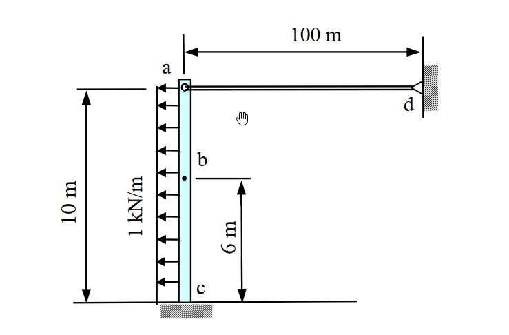
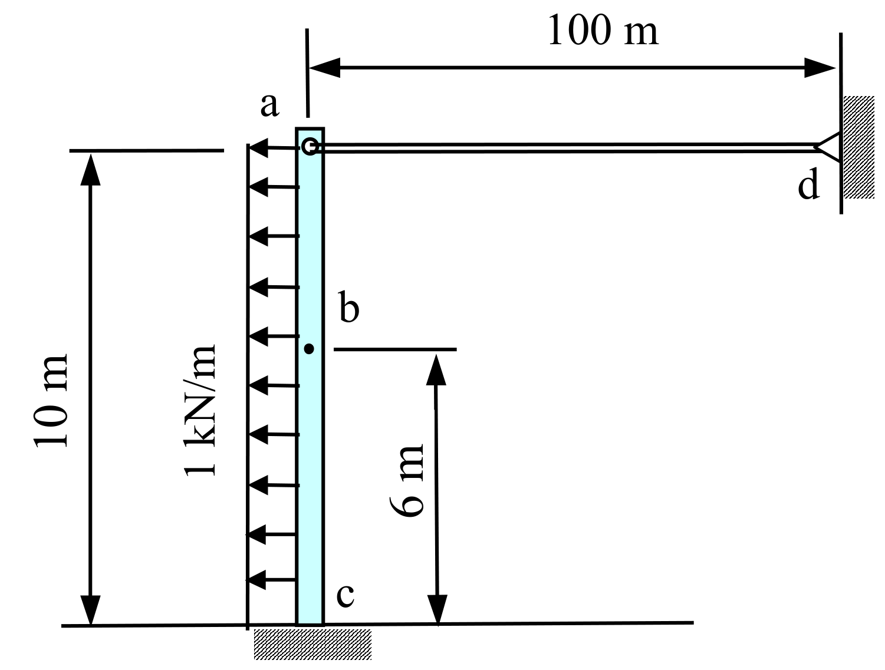
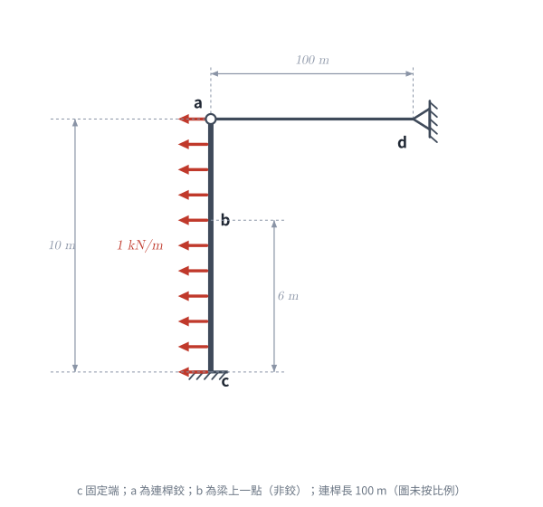
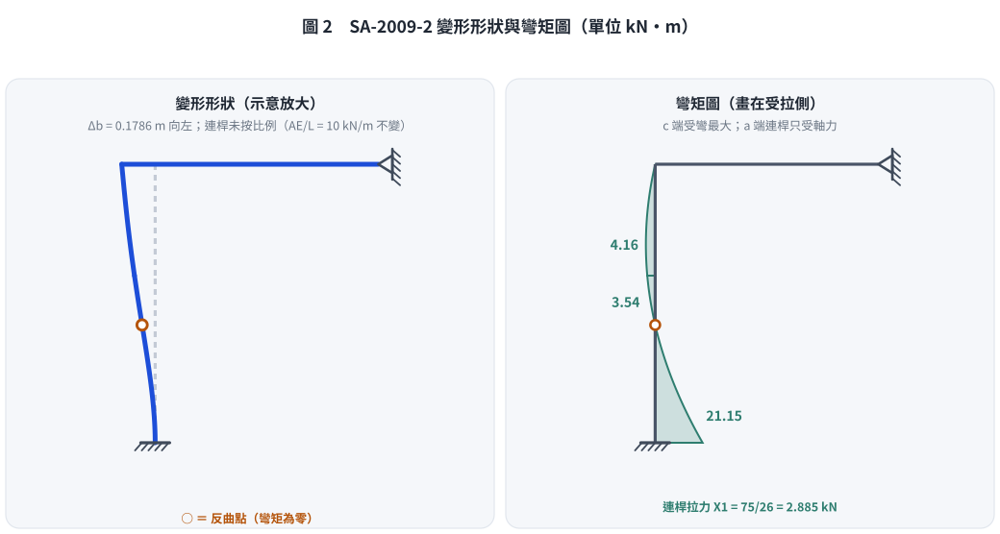

📄 題目正本（考卷原文、附圖與判讀清單；不含解法）
SA-2009-2 題目正本
本檔只記錄考卷上寫了什麼、圖上畫了什麼，不含任何解法。解析見同資料夾
SA-2009-2.md。
判讀清單經使用者確認前，狀態為「待確認」；確認後本檔原則上不再修改（改動須回考卷原圖並記 log）。
| 項目 | 內容 |
|---|---|
| 考卷 | raw/exams/SA-2009_結構學.pdf，第 1 頁（正面），第二題（無圖號） |
| 考年 | 2009（民國 98 年）專技高考結構工程技師「結構學」 |
| 配分 | 25 分 |
| 附圖 | SA-2009-2-fig-1.png、SA-2009-2-fig-2.png |
| 判讀狀態 | 已確認（2026-11-07 使用者確認；原轉錄：2026-11-07 轉錄；PyMuPDF 110 dpi 整頁＋400–1200 dpi 局部放大；PDF 向量繪圖；盲讀於開啟解析前完成） |
1. 考卷原文（逐字）
二、如圖所示之結構受一 1 kN/m 之均佈力作用，其中ac為梁（beam）構件，ad為連桿（linkage），c點為固定端（fixed end），請計算b點之水平位移Δb。假設ac梁之EI = 1000 kN-m²，ad連桿之AE = 1000 kN，其中E為構件之彈性模數，I為斷面慣性矩，A為斷面積。（25 分）
2. 考卷給的公式、附表與參數
- 考卷沒有給任何參考公式或附表。
- 給定：梁 ac 的 EI＝1000 kN-m²；連桿 ad 的 AE＝1000 kN。
- 考卷沒有說是否忽略梁 ac 的軸向變形（梁只給 EI）。
- 卷首注意事項：㈠可以使用電子計算器，但需詳列解答過程。㈡不必抄題，作答時請將試題題號及答案依照順序寫在試卷上，於本試題上作答者，不予計分。
- 考試時間：2 小時。
3. 附圖

證據圖 SA-2009-2-fig-1.png

證據圖 SA-2009-2-fig-2.png（2026-11-07 自考卷重新擷取 500 dpi，無游標）
圖面文字照錄：100 m、a、d、b、10 m、1 kN/m、6 m、c
4. 判讀清單
| # | 項目 | 判讀 | 圖上／題文依據 | 把握 |
|---|---|---|---|---|
| 1 | c | 固定端（梁底接剖線，無三角形） | 450 dpi 放大；題文「c 點為固定端」 | 確定 |
| 2 | d | 鉸支承於右側直立牆（三角形尖端朝連桿） | 450 dpi 放大 | 確定 |
| 3 | a | 連桿與梁頂的鉸接（小空心圓） | 450 dpi 放大 | 確定 |
| 4 | b | 梁上一點（小實心點），不是鉸 | 圖上為實心點，非空心圓 | 確定 |
| 5 | 尺寸 | 梁高 10 m（c 至 a）；b 在 c 上方 6 m；連桿長 100 m（a 至 d） | 10 m、6 m 尺寸界線對齊 a、b、c；100 m 界線對齊梁右緣與牆 | 確定 |
| 6 | 連桿方向 | 水平，與梁垂直 | 圖面 | 確定 |
| 7 | 載重 | 水平向左 1 kN/m，作用 c 至 a 全高（背離 d 的方向） | 箭頭朝左，自 c 排到 a | 確定 |
| 8 | 剛度 | 梁 EI＝1000 kN-m²；連桿 AE＝1000 kN | 題文 | 確定 |
| 9 | 所求 | b 點水平位移 Δb | 題文 | 確定 |
| 10 | 靜不定度 | 固定 3＋連桿 1＝4 個未知力，方程式 3，一度靜不定 | 計數 | 確定（解讀）；使用者確認 |
| 11 | 證據圖 | 舊 fig-1 有游標（連桿下方空白處）；新增 fig-2（500 dpi） | — | 確定 |
轉錄：2026-11-07（SA-U2-2 題目正本推廣・批 1）
確認：2026-11-07 使用者確認
考題編號：SA-2009-2
主分類： SA-U2-2 靜不定結構諧合變位
副分類： 無
分析法： 柔度法 (Force Method) / 單位虛力法
標籤： 靜不定, 梁柱系統, 均布載重
1. 題目（考卷原文見題目正本）
考卷原文、公式／附表、附圖與判讀清單（已確認）見
SA-2009-2-problem.md。本節只列解題時最容易讀錯的地方與本解使用的記號；題意以題目正本為準。

重繪自考卷附圖，依判讀清單重繪。攔：載重方向讀反、b 讀成鉸、b 高度量錯。
常見誤讀
| 項目 | 正確判讀 | 常見誤讀 |
|---|---|---|
| 載重方向 | 水平向左（背離 d），作用 c 至 a 全高 | 向右 |
| b 點 | 梁上一點（實心點），距 c 6 m | 梁內鉸，或距 a 6 m |
| 連桿 | 水平，長 100 m，AE＝1000 kN | 忽略連桿變形 |
本解記號： 梁 ac：L＝10 m、EI＝1000 kN-m²；連桿 ad：100 m、AE＝1000 kN；w＝1 kN/m（←）；y 自 c 向上量；贅力 X₁＝連桿拉力（對梁 a 點向右）；水平位移向右為正。
2. 考題核心精神與出題者意圖 (Core Concepts & Examiner's Intent)
本題的核心在於測驗考生處理「結合梁（抗彎）與二力桿件（抗軸壓/拉）」之混合結構的能力。主要考察以下知識點：
- 靜不定度之判別與相容條件的建立：這是一個一度靜不定結構。若以力法（柔度法）求解，需要能夠切斷連桿與梁的連接，將其內力視為贅力，並透過變形相容（相容條件）建立方程式。
- 彈性變形之疊加原理應用：針對懸臂梁，須熟知均布載重與端點集中載重所造成的變形公式，並在同一個目標點（$b$ 點）進行位移的疊加。
- 軸向剛度與彎曲剛度的綜合考量：在計算連桿的變形量時需要考慮 $AE$，而梁的撓曲變形需要考慮 $EI$。考生容易忽略二者在變形協調中符號約定的相對關係。
3. 解題戰略地圖與陷阱分析 (Strategic Roadmap & Trap Analysis)
戰略地圖：
- 第一步：判定靜不定度，選擇柔度法 (Force Method)。將連桿對梁的拉力 $X_1$ 視為贅力，建立基本結構（懸臂梁受均布載重 $w$ 及端點集中力 $X_1$）。
- 第二步：建立 $a$ 點的相容條件方程式。梁端 $a$ 點因載重產生的位移與連桿因受拉產生的伸長量必須符合幾何與支承關係。
- 第三步：代入各自的變形公式，解出贅力 $X_1$ 的大小。
- 第四步：以求得的 $X_1$ 與原載重 $w$ 分別計算 $b$ 點的位移，最後疊加求得最終水平位移 $\Delta_b$。
關鍵陷阱：
- 符號與變形方向的混淆：連桿拉力 $X_1$ 對梁是向右的力、連桿本身伸長。連桿右端 d 固定，所以連桿伸長多少，a 點就向左移多少：$\Delta_a$（向右為正）$= -\Delta_{ad}$。均佈載重把 a 推向左（遠離 d），連桿被拉長，所以 $X_1$ 是拉力。
- 彈性曲線公式套用錯誤：計算梁任一點 $b$（距固定端 6m）的撓度時，不能只依賴自由端點的撓度公式，必須使用「任意位置 $y$ 的懸臂梁撓度公式」。若誤將 $b$ 點視為端點或直接用比例法折減，將會造成嚴重的計算錯誤。
3.5 變數層次分析 (Variable Hierarchy Analysis)
最終目標
求出梁上 b 點的水平向位移 \Delta_b
本題關鍵公式（依計算順序）
Step 1: 建立 a 點變位相容方程式
$$ \Delta_a = \Delta_{a,w} + \Delta_{a,X1} = -\Delta_{ad} $$
Step 2: 懸臂梁端點受載變位與連桿軸向變形
$$ \Delta_{a,w} = -\frac{w L^4}{8 EI}, \quad \Delta_{a,X1} = \frac{X_1 L^3}{3 EI}, \quad \Delta_{ad} = \frac{X_1 L_{ad}}{AE} $$
Step 3: 求解贅力 $X_1$
$$ \boxed{X_1} = \frac{-\Delta_{a,w}}{\frac{L^3}{3 EI} + \frac{L_{ad}}{AE}} $$
Step 4: 疊加求得任意點 b 的位移
$$ \Delta_b = \Delta_{b,X1} + \Delta_{b,w} = \frac{\boxed{X_1} y^2}{6 EI} (3L - y) - \frac{w y^2}{24 EI} (y^2 - 4Ly + 6L^2) $$
L1：題目直接給定
| 符號 | 數值 | 說明 |
|---|---|---|
| $L$ | $10\text{ m}$ | 梁 ac 的總長度 |
| $EI$ | $1000\text{ kN-m}^2$ | 梁 ac 的彎曲剛度 |
| $L_{ad}$ | $100\text{ m}$ | 連桿 ad 的長度 |
| $AE$ | $1000\text{ kN}$ | 連桿 ad 的軸向剛度 |
| $w$ | $1\text{ kN/m}$ | 作用於梁 ac 的均佈載重 (向左) |
| $y$ | $6\text{ m}$ | 目標點 b 距底部 c (固定端) 的距離 |
L2：需知識點推導
求解贅力
| 符號 | 公式／來源 | 卡關? |
| --- | --- | --- |
| $\Delta_{a,w}$ | $-\frac{w L^4}{8 EI}$ | |
| $\Delta_{a,X1}$ | $\frac{X_1 L^3}{3 EI}$ | |
| $\Delta_{ad}$ | $\frac{X_1 L_{ad}}{AE}$ | |
| $X_1$ | 變位相容解出 | |
計算 b 點位移
| 符號 | 公式／來源 | 卡關? |
| --- | --- | --- |
| $\Delta_{b,X1}$ | $\frac{X_1 y^2}{6 EI} (3L - y)$ | |
| $\Delta_{b,w}$ | $-\frac{w y^2}{24 EI} (y^2 - 4Ly + 6L^2)$ | |
| $\Delta_b$ | $\Delta_{b,X1} + \Delta_{b,w}$ | |
L3：深層知識（不懂就卡住）
| 知識點 | 說明 | 卡關? |
|---|---|---|
| 梁與桿件的變位諧合符號約定 | 連桿右端 d 固定，所以連桿伸長多少，a 點就向左移多少：$\Delta_a$（向右為正）$= -\Delta_{ad}$（$\Delta_{ad}$＝連桿伸長量）。 | |
| 懸臂梁任意截面的彈性曲線方程式 | 必須精確記住並套用端點集中力以及全跨均布載重在距離支承 $y$ 處的撓度公式。 |
4. 步驟化詳細計算過程 (Step-by-Step Detailed Calculation)
4.1 建立基本結構與相容方程式
採用柔度法 (Force Method)：
- 解除連桿 ad 對梁的束制，將連桿對梁 a 點的作用力設為贅力 $X_1$（假設向右為張力）。
- 此時基本結構為一純懸臂梁 ac，受到向左的均佈載重 $w = 1\text{ kN/m}$，以及 a 點向右的集中力 $X_1$。
相容條件：
梁在 a 點的水平變位量 $\Delta_a$（設向右為正）必須等於連桿 ad 左端的位移（也就是連桿伸長量所造成的位移）。
- 梁 a 點變位：$\Delta_a = \Delta_{a,w} + \Delta_{a,X1}$
- 連桿 a 點變位：連桿右端 d 固定，所以連桿伸長多少，a 點就向左移多少，因此 $\Delta_a = -\Delta_{ad}$（其中 $\Delta_{ad}$ 為連桿受拉伸長量）。
4.2 計算基本結構變位
1. 均佈載重 $w$ 造成的變位 (向左為負)：
對於長度 $L=10\text{ m}$ 的懸臂梁，受均佈載重 $w$ 作用，自由端 a 的變位公式為：
$$ \Delta_{a,w} = -\frac{w L^4}{8 EI} = -\frac{1 \times 10^4}{8 \times 1000} = -\frac{10000}{8000} = -1.25\text{ m} $$
2. 贅力 $X_1$ 造成的變位 (向右為正)：
對於懸臂梁端點受集中力 $X_1$，自由端 a 的變位為：
$$ \Delta_{a,X1} = \frac{X_1 L^3}{3 EI} = \frac{X_1 \times 10^3}{3 \times 1000} = \frac{1000 X_1}{3000} = \frac{X_1}{3}\text{ m} $$
所以梁端 a 的總變位：
$$ \Delta_a = -1.25 + \frac{X_1}{3} $$
3. 連桿的變形量：
連桿承受張力 $X_1$，其伸長量為：
$$ \Delta_{ad} = \frac{X_1 L_{ad}}{AE} = \frac{X_1 \times 100}{1000} = 0.1 X_1 $$
依據相容條件，a 點向左移的量等於連桿伸長量（$-\Delta_a = \Delta_{ad}$）：
$$ \Delta_a = - \Delta_{ad} \implies -1.25 + \frac{X_1}{3} = -0.1 X_1 $$
4.3 解出贅力 $X_1$
將方程式移項求解：
$$ X_1 \left( \frac{1}{3} + \frac{1}{10} \right) = 1.25 $$
$$ X_1 \left( \frac{13}{30} \right) = \frac{5}{4} $$
$$ \boxed{X_1} = \frac{5}{4} \times \frac{30}{13} = \frac{150}{52} = \frac{75}{26}\text{ kN} \approx 2.8846\text{ kN} $$
4.4 計算 b 點的位移 $\Delta_b$
b 點距離底部 c 為 6m（即從固定端起算 $y = 6\text{ m}$）。
懸臂梁在任意位置 $y$ 的變形量可由各別負載的彈性曲線公式疊加求得（向右為正）：
1. 集中力 $X_1$ 對 b 點的變位：
公式：$v_P(y) = \frac{P y^2}{6 EI} (3L - y)$
$$ \Delta_{b,X1} = \frac{(75/26) \times 6^2}{6 \times 1000} (3 \times 10 - 6) = \frac{(75/26) \times 36}{6000} \times 24 = \frac{75 \times 6 \times 24}{26 \times 1000} = \frac{10800}{26000} = \frac{27}{65}\text{ m} \approx 0.41538\text{ m} $$
2. 均佈載重 $w$ 對 b 點的變位：
公式：$v_w(y) = -\frac{w y^2}{24 EI} (y^2 - 4Ly + 6L^2)$
$$ \Delta_{b,w} = -\frac{1 \times 6^2}{24 \times 1000} (6^2 - 4 \times 10 \times 6 + 6 \times 10^2) $$
$$ \Delta_{b,w} = -\frac{36}{24000} (36 - 240 + 600) = -\frac{3}{2000} \times 396 = -\frac{1188}{2000} = -0.594\text{ m} $$
3. b 點總位移：
$$ \Delta_b = \Delta_{b,X1} + \Delta_{b,w} = \frac{27}{65} - 0.594 = \frac{5400}{13000} - \frac{7722}{13000} = -\frac{2322}{13000}\text{ m} = -\frac{1161}{6500}\text{ m} \approx -0.1786\text{ m} $$
負號表示位移方向向左。
$$ \boxed{\Delta_b = \frac{1161}{6500}\text{ m} \approx 0.1786\text{ m} \quad (\text{方向向左})} $$

圖 2 變形形狀與彎矩圖（連桿未按比例，以等效長度繪製，$AE/L = 10$ kN/m 不變；$X_1$、$\Delta_b$ 與 a 點位移逐項核對本解）。這張圖攔的是「$\Delta_b$ 方向畫反」和「把連桿當成受壓」。
5. 關鍵爭議點與進階探討 (Critical Issues & Advanced Discussion)
-
梁桿複合結構的相容條件符號約定：
在考試中，學生常因為梁位移方向與連桿伸長方向的配合失誤導致符號帶錯。為避免此類錯誤，強烈建議一律先畫出分離體圖 (Free Body Diagram)。若假設梁端 $a$ 受力向右，則連桿拉梁，代表連桿處於受張力狀態；連桿右端 d 固定，所以連桿伸長多少，a 點就向左移多少（伸長使左端 a 向左），故 $\Delta_a = - \Delta_{ad}$。檢核：解得 $\Delta_a = -1.25 + X_1/3 = -0.2885$ m（向左），連桿伸長 $0.1X_1 = 0.2885$ m，兩者相等。 -
撓度曲線方程式的記憶與替代方案：
本題高度依賴對於懸臂梁在任意位置 $y$ 處撓度公式的熟悉度。如果考場上遺忘了 $v_w(y)$ 或是 $v_P(y)$ 的標準公式，可以透過單位虛力法 (Unit Load Method) 求解：對 $b$ 點施加單位虛力，再利用虛功原理方程式 $\int \frac{Mm}{EI} dy$ 進行積分。雖然這種方式運算較為繁瑣，但屬於最安穩且不易出錯的基本功，也能用來驗算既有的彈性曲線公式。
修正日期：2026-11-07（§1 改為指向題目正本並放重繪附圖（figs/SA-2009-2-fig-1-problem.svg）、加常見誤讀；圖由 gen_SA-2009-2.py 產生，可重跑）
修正日期：2026-11-07（非勘誤）表述修正：§3 陷阱 1、§3.5 L3、§4.1、§4.2、§5 的相容條件正負號敘述改為「連桿右端 d 固定，連桿伸長多少 a 點就向左移多少」，§5 補數值檢核；答案不變
修正日期：2026-11-07（非勘誤）圖解補繪：圖 2（gen_SA-2009-2.py，可重跑）